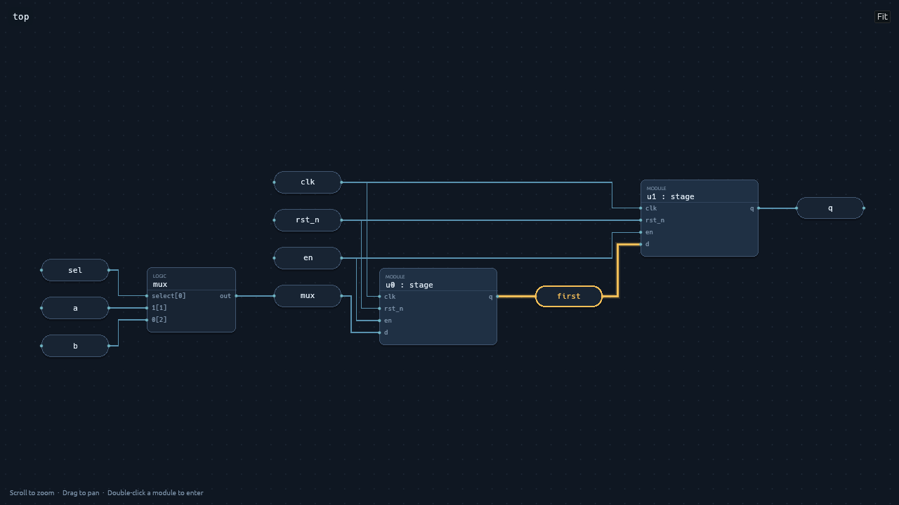
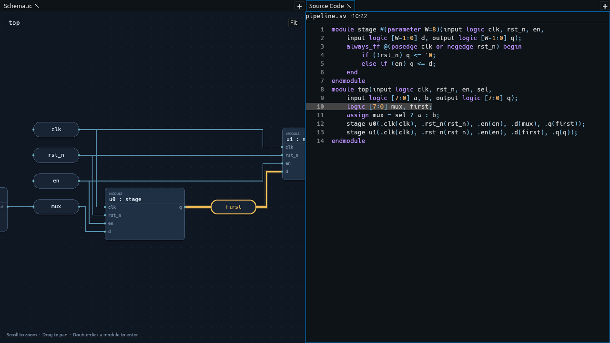

Document
Validated VDB
The source index shares an immutable database and its explicit trace binding. Runtime values remain in VTR.
Inside Surfer · Schematic navigation
When a waveform changes unexpectedly, open the surrounding circuit. Follow a wire, inspect a child module, then jump to RTL or the hierarchy without leaving your recording.
Open a local VTR recording with its matching VDB companion, such as pipeline.vtr. Right-click a displayed signal and choose Open schematic. Surfer opens or focuses its single Schematic tile, loads the signal’s owning module and highlights the corresponding net in amber. A selected net highlights its signal pill and connected wire segments together.
In the existing hierarchy browser, right-click a scope and choose Open schematic to inspect that module without a preselected signal. These entries appear when the validated companion can map the selected signal or scope to the design. Verilator’s recorded name TOP.top.u0.q maps explicitly to VDB symbol top.u0.q, owned by module top.u0.

top.first net, selected in the real Surfer canvas.Rounded pills represent signals. Larger cards represent child modules, processes and logic operations, with inputs on the left and outputs on the right. ELK arranges the graph from left to right and routes orthogonal wires. The module name stays in a small overlay; there is no permanent inspector competing with the drawing.
| Gesture | Result |
|---|---|
| Scroll or pinch | Zoom around the pointer, keeping that circuit location under the mouse. |
| Drag with left or middle button | Pan the canvas. |
| Click a block, signal pill or wire | Select it. Click empty canvas to clear the selection. |
| Double-click a module card | Enter that child module. Use Up to return to its parent. |
| Fit, F with canvas focus, or double-click empty canvas | Frame the whole module. Large modules may need zooming to read individual labels. |
| Right-click a selected object | Choose Go to source or Reveal in hierarchy. |
Opening a signal in a large module frames its immediate neighborhood at a readable scale. Use Fit to recover the overall circuit. Resizing the tile preserves zoom and keeps the world point at the canvas center. Long labels are shortened; hover a block for its full title and detail.
Go to source opens or focuses the Source Code tile at the signal declaration, module, process or expression location carried by VDB. The action is disabled when that location is unavailable. Anonymous wires use their driving block’s source. A source file that cannot be read produces an error in the source tile.
Reveal in hierarchy opens the existing hierarchy panel and expands and selects the owning scope. A child module card reveals that child. A signal reveals its owner. Other blocks and anonymous wires reveal the current module.

Document
The source index shares an immutable database and its explicit trace binding. Runtime values remain in VTR.
Saved tile state
The module instance and requested highlighted symbol survive workspace serialization.
Runtime only
Netlist geometry, worker receiver, pan, zoom and mouse selection are disposable. Reopening regenerates the layout.
The worker builds a module-local netlist from VDB, sizes its nodes for this canvas, then asks elkrs for geometry. Child modules remain opaque navigable blocks. The UI displays “Arranging schematic…” while this runs. A failed build or layout displays its error in the tile.
Each pending layout belongs to a particular database identity and instance. Switching either discards the old receiver and geometry; an old worker cannot install its result into the new scene. Removing the VDB clears the canvas. Geometry does not decode waveform histories or mutate the recorded trace.
This teaching model illustrates state transitions; it is not an embedded Surfer canvas. Start a layout, replace the recording, then try delivering the old result.
The schematic is currently native-only and requires a matching VDB attached to a local VTR recording. It shows the structural and source semantics available in that database. It does not annotate live cursor values, trace temporal drivers, flatten every child into one graph, or edit RTL. Unsupported VDB expressions and output connections remain explicit blocks rather than invented logic. Procedural blocks may remain opaque.
A module with many nodes can produce a large drawing. Layout runs off the UI thread, but there is no cancellation of work already running. A discarded worker may finish in the background. Pan, zoom and subsequent mouse selection are intentionally not saved; the original requested highlight is restored on reopening. Design capabilities and richer cross-view navigation can evolve separately from the VTR format.
PNG tests exercise pipeline and operator drawings, selection, pointer zoom and pan, source and hierarchy navigation, both entry menus and child navigation. They use committed simulator examples and Surfer’s renderer, not screenshots from the inspiration prototype.